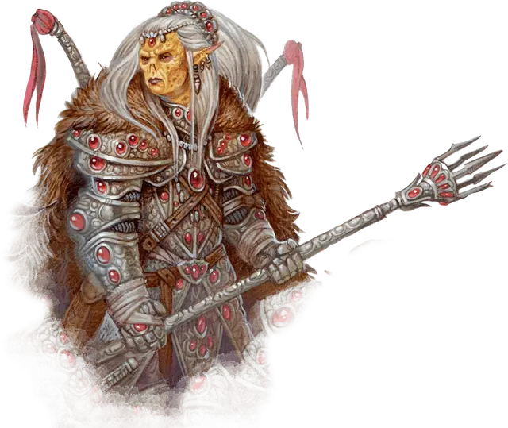

Гитъянки главнокомандующий
Githyanki Supreme Commander
Средний Гуманоид (Гит), любое мировоззрение

Класс Доспеха 18 (латы)
Хиты 187 (22к8 + 88)
Скорость 30 футов
| мод | спас | ||
|---|---|---|---|
| СИЛ | 19 | +4 | +4 |
| ЛОВ | 17 | +3 | +3 |
| ТЕЛ | 18 | +4 | +9 |
| мод | спас | ||
|---|---|---|---|
| ИНТ | 16 | +3 | +8 |
| МДР | 16 | +3 | +8 |
| ХАР | 18 | +4 | +4 |
Навыки Восприятие +8, Запугивание +9, Проницательность +8
Чувства пассивное Восприятие 18
Языки Гитский
Опасность 14 (11500 опыта)
Бонус мастерства +5
Особенности
Легендарное сопротивление (3/день). Если гитъянки проваливает спасбросок, то может вместо этого сделать спасбросок успешным.
Действия
Мультиатака. Гитъянки совершает две атаки серебряным двуручным мечом.
Серебряный двуручный меч. Рукопашная атака оружием: +12 к попаданию, досягаемость 5 футов, одна цель. Попадание: 14 (2к6 + 7) рубящего урона плюс 17 (5к6) урона психической энергией. При критическом попадании по цели, находящейся в астральном теле (как при использовании заклинания проекция в астрал), гитъянки может вместо причинения урона перерезать серебряную нить, соединяющую цель с материальным телом.
Использование заклинаний (Псионика). Его базовой характеристикой является Интеллект (Сл спасброска от заклинаний 16). Гитъянки может накладывать следующие заклинания без использования материальных компонентов:
Неограниченно. : волшебная рука [mage hand] (рука невидима)
3/день каждое. : левитация [levitate] (только на себя), необнаружимость [nondetection] (только на себя)
1/день каждое. : длань Бигби [bigby's hand], множественное внушение [mass suggestion], уход в иной мир [plane shift], телекинез [telekinesis]
Бонусные действия
Астральный шаг. Гитъянки телепортируется вместе со всем надетым и несомым имуществом в свободное пространство в пределах 30 футов, которое может видеть.
Реакции
Парирование. Гитъянки добавляет 5 к КД против одной рукопашной атаки, которая должна попасть по нему. Для этого гит должен видеть атакующего, и должен использовать рукопашное оружие.
Легендарные действия
Гитъянки может совершить 3 легендарных действия, выбирая из представленных ниже вариантов. За один раз можно использовать только одно легендарное действие, и только в конце хода другого существа. Гитъянки восстанавливает использованные легендарные действия в начале своего хода.
Приказ союзникам. Военачальник выбирает одного союзника в пределах 30 футов от него, которого может видеть. Если цель может видеть или слышать главнокомандующего, то может сделать одну атаку оружием реакцией, получив преимущество на бросок этой атаки.
Атака (2 действия). Гитъянки совершает одну атаку серебряным двуручным мечом.
Описание
Главнокомандующие управляют армиями, и у каждого в подчинении десять гитъянки Кит'раков [githyanki Kith'rak], которые, в свою очередь, командуют остальными силами. Большая часть главнокомандующих ведут войска в бой на красных драконах.